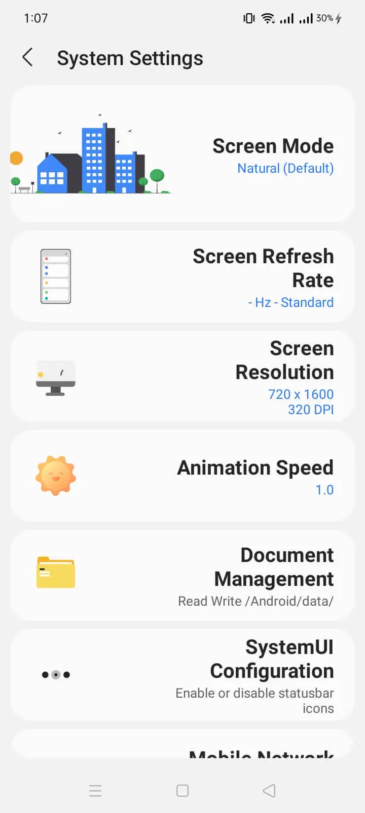

我看着 Sam Helper 一路迭代：一个三星系统增强工具的进化史
从屏幕模式快捷入口到 Shizuku 深度授权，Sam Helper 这几年到底在忙什么？从功能演进看它的产品逻辑与下一步走向。
现状：它已经不只是个调屏幕的小工具了
现在这版 Sam Helper 打开首页，模块多得让人有点恍惚（安装包从sam helper下载拿就行）——屏幕模式切换、主题与字体管理、分辨率和刷新率微调、安装来源修改……如果三年前有人告诉我这个东西能做到这么多，我可能会以为那是个 Root 工具。但它不是，它走的是 Shizuku 授权这条路，安全、免 Root、功能边界清晰。

最有意思的是，去sam helper官网看一下它的模块列表就会发现，它的功能演进完全踩在了三星 One UI 系统开放性的缝隙里——原生不给的，它给个快捷入口；原生锁死的，它想办法绕过去。用户要的不是折腾，是"三星能做但不给做"的那部分自由。
来路：从一个快捷开关说起
Sam Helper 的起点其实很朴素。三星 One UI 原生确实有屏幕模式切换，但藏在多层设置里，日常想从"自然"切到"影院"再切回来，路径太长。Sam Helper 最早就是把这些常用的系统设置项打包成了一个快速切换面板——屏幕模式、亮度偏移、字体大小，几个开关一键搞定。
这一步看似简单，却精准击中了三星用户的痛点：One UI 的功能藏得太深。系统设置里有，但打开要费点劲。Sam Helper 把高频操作拉到了用户眼前，这是它站住脚的原因。
主题生态的破局
接下来的关键转折点是主题相关功能的加入。三星主题商店的生态相对封闭——主题装在哪、怎么提出来、能不能自己移植，原生用户基本没机会碰。Sam Helper 先是加了"提取当前主题 APK"的功能，让用户能拿到系统里实际安装的主题包名和路径，再后来出了修改安装来源——让第三方装的主题也能被系统识别。
这个功能需要更高级的权限。普通的应用列表访问已经不够了，它得拿到系统级写权限才能改 APK 的元数据标记。也是在这个阶段，Sam Helper 引入了 Shizuku 授权体系——不碰 Root，走 ADB 调试授权，安全等级更高，用户心智也更容易接受。
权限体系本身也成了产品成熟度的标志。现在首次打开 Sam Helper 会分阶段请求：存储访问、应用列表、可选的无障碍服务，再到 Shizuku 的系统级授权。每一步都解释得清楚，哪些是基本功能必需、哪些是高级功能可选。早期版本可能只有一个粗暴的"请求全部权限"，现在分层授权、分功能激活，说明团队在用户体验上动了脑子。

迭代规律：他们一直在死磕什么
从sam helper文档覆盖的功能模块来看，Sam Helper 团队的优先级非常清晰——打破 One UI 的边界。
屏幕模式是"原生有但太深"，拉出来给你；主题提取是"原生锁死"，给你撬个缝；修改安装来源是"原生不允许"，帮你改标记。每一个功能都对准三星系统对用户的限制，从最表面的快捷入口到最深入的系统元数据改动，路线是越来越往系统底层走，但权限获取的方式反而越来越安全。
有什么是他们一直没碰的？非三星设备适配就是一个。Sam Helper 的所有功能都建立在 One UI 框架之上，换个品牌基本没用。这是一个很聪明的定位选择——与其做一个"通用安卓工具箱"跟别人卷，不如在三星生态里深耕，做到极致。
下一步会怎么走
从迭代规律推，Sam Helper 的方向大概率还是沿着 One UI 专属功能深挖。现在能看到的样本里，屏幕模式、主题、权限这几块已经覆盖得不错了，但还有几个可能的扩展方向：一是动画速度和过渡效果的更多自定义，三星原生其实有开发者选项但藏得极深；二是 AOD（Always On Display）的更精细控制；三是 Lock & Labs 模块的完善——这在样本里只提到了应用列表访问的需求，还没看到具体功能落地。
当然这只是从迭代逻辑推的，不当官方口径传。但有一点可以确定：只要三星继续在 One UI 里锁功能、藏开关，Sam Helper 就还有事可做。写这篇文章时翻的那些细节，在GitHub、Gitee、GitCode 三个仓库都能找到，选哪个方便就用哪个。